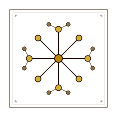

Building Society HistoryAn overview of what has been documented so far, what is in progress, and what is planned.
If you would like to support the long-term maintenance and development of the archive, a Ko-fi page is available at ko-fi.com/buildingsocietyhistory.
For more on the aims, methodology, and long-term plans for the project, see the About page.